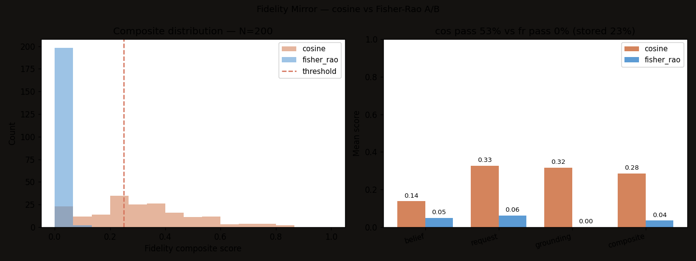

The Result

| Metric | AUC vs is_belief | Pearson r | Pass-rate flips |
|---|---|---|---|
| Cosine | 0.626 | 0.235 | 107 of 200 samples disagree across metrics |
| Fisher–Rao | 0.699 (+0.073) | 0.312 (+33%) |
What's Being Measured
Aether's substrate stores every memory as a belief locus — a center vector plus a per-dimension uncertainty (sigma). The fidelity mirror grades each generated response against the relevant memories: did it actually use what the substrate believes, or did it speak past the grounding? Today's bench computes that grade two ways, on the same 200 samples, with the same composite weights:
- Cosine path. The current production metric. Flat-space angular similarity between response and memory embeddings. Equal weight on every dimension.
- Fisher–Rao path. Treats each memory as a Gaussian belief locus. Distance is precision-weighted: dimensions where the substrate is sure (low sigma) count more; dimensions where it's uncertain (high sigma) count less. Plus a covariance-shape divergence term for differences in uncertainty profile.
The discrimination test (AUC against the substrate's own stored is_belief flag) is scale-invariant — it asks which metric ranks grounded responses higher than ungrounded ones, independent of where you put a threshold. Fisher wins by 7.3 percentage points of AUC on N=200.
Why This Was Predictable, and Why I Hadn't Predicted It
The Fisher–Rao machinery has been in personal_agent/info_geometry.py since the splat work in March. The 2026-03-26 deep-research session noted that "Fisher metric reranks by certainty," but the metric was never plugged into the production fidelity mirror — that surface kept using plain cosine. Today's A/B closes the gap, with a number.
What's at the activation layer
Goodfire's recent work demonstrates that concepts in language and vision models live on curved manifolds, not linear directions. Linear steering interventions fail; manifold-aware ones succeed. SAEs shard the manifold and lose the larger structure.
What's at the belief layer
The substrate stores beliefs as Gaussians, not points. Fisher–Rao distance is the natural metric on that space — it's the geodesic on the manifold of probability distributions. Cosine on the centers throws away the per-dimension uncertainty that the substrate spent its compute building.
Same shape, different layer. The activation papers don't make this claim about belief substrates — there isn't a belief substrate in their architecture. But the result transfers cleanly: geometry-aware metrics on geometry-aware representations beat flat-space metrics, regardless of which layer of the stack you're operating on.
What This Doesn't Show
- N = 200 is enough to see the effect, not enough to publish. The paper-figure version is N ≥ 1000 with stored sigma instead of default sigma.
- Both AUCs are well below 0.8. Neither metric is a strong predictor of the substrate's own
is_beliefflag — the relative improvement is what's load-bearing, not the absolute number. The stored flag itself is imperfect ground truth. - Single embedding model (MiniLM-L6-v2, 384D). Behavior at 768D / 1024D is a follow-up.
- This isn't the activation-layer result. It's the substrate-layer analog. The two layers may correlate; whether they do is an open empirical question.
What Ships Next
- Wire Fisher–Rao into
fidelity_mirror.pyas the default metric when sigma is available; fall back to cosine otherwise. ~30 LOC change. - N = 1000 sweep with stored sigma. Overnight bench. The expected shape: Fisher's edge widens because the stored sigmas carry real information that defaults flatten away.
- Multi-metric comparison.
info_geometry.compare_all_metricsalready covers Bhattacharyya and KL-symmetrized. Same data, four numbers side by side. Paper figure. - Cross-encoder check. Does Fisher's advantage scale with embedding dimension?
Reproduce
Both bench scripts are self-contained — no external services, no LLM calls, runs offline against the substrate's own SQLite.
git clone https://github.com/blockhead22/CRT-GroundCheck-SSE.git
cd CRT-GroundCheck-SSE
pip install -e .
python labs/fidelity_bench/run_bench_metric_ab.pyResults land in labs/fidelity_bench/results/ as a JSON dump and a chart. Source: run_bench_metric_ab.py. Bench README with limitations and follow-ups: labs/fidelity_bench/README.md.
Related
- Goodfire — The world inside neural networks (2026-05)
- Anthropic — Natural Language Autoencoders (2026-05)
- Anthropic — Emotion Concepts and their Function in a Large Language Model (2026-04)
- Aeteros — Backward Influence Propagation
- Aeteros — Cascade Complexity
- Aeteros — Contradiction Density Across 13 Months